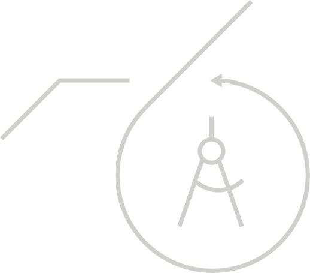
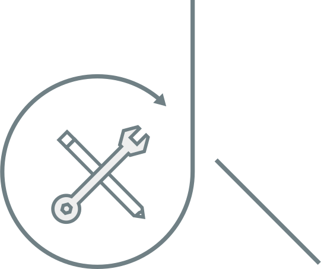

Approach
We’re flexible, not because we’re lazy or disorganized. Because it works.

Research
Let’s figure out what works and what needs work. User research on the product, usability, and messaging. But can it serve users and the business?


Design
Pixel perfect, unique, and more than just pretty. From branding to interface design, it needs to work. Can we swing that?


Learn more about the doers doing things worth doing.
Meet the team